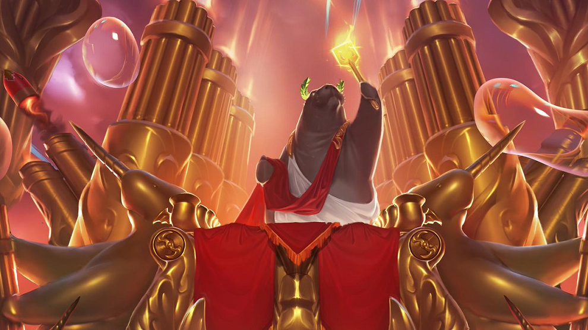

La Grieta del Invocador es el mapa por excelencia, el más jugado, y por lo tanto, el que
más modos de juego tiene, entre ellos está a ciegas, reclutamiento y clasificatorio. El mapa tiene
tres calles y una jungla, los jugadores han de dividirse por las calles cumpliendo su rol previamente
elegido con el fin de derribar las torretas, hacer objetivos y coger ventaja frente
al equipo contrario con objetos comprados en la tienda para derribar su nexo, ubicado en la parte más
protegido de la base enemiga, además de, por supuesto, defender el nexo aliado. En cada modo de juego
el equipo consta de cinco jugadores, es decir, 5 vs 5. En el modo de juego "A ciegas" no existirían los
bloqueos de campeones o personajes mientras que en el modo de juego "Reclutamiento" sí. El modo clasificatorio
consistiría en un Reclutamiento dividido en rangos, los jugadores pelean ganando y perdiendo puntos
clasificatorios llamados "LP", así dividiendo a los jugadores por sus habilidades.
ARAM
ARAM es un modo de juego jugado en el mapa El Abismo de los Lamentos,
consiste en una calle donde todos los jugadores tienen como fin destruir el nexo enemigo, ubicado en su
base, la única norma que tiene es que la vuelta a base no existe y solo se puede volver muriendo.
URF

URF, un modo de juego jugado en la Grieta del Invocador pero más frenético,
es decir, todos los atributos de los personajes son mejorados para hacer así que los campeones tengan
más rápido sus habilidades, tengan más daño, no existe gasto de maná y hay una catapulta en cada base
para que los campeones puedan catapultarse a ciertas zonas del mapa.